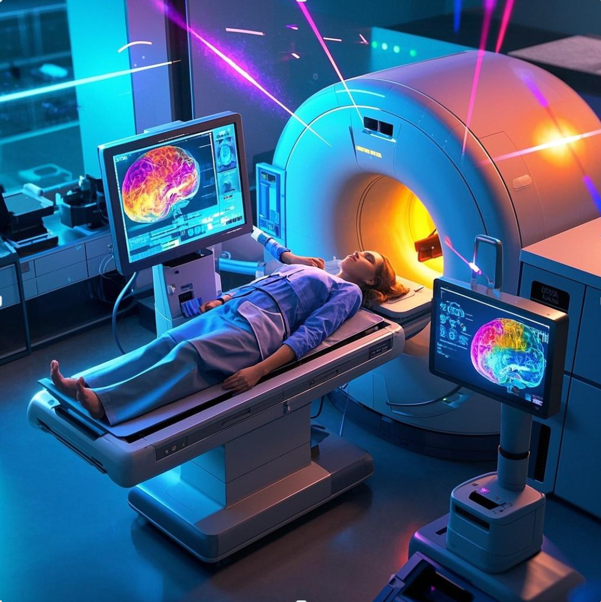
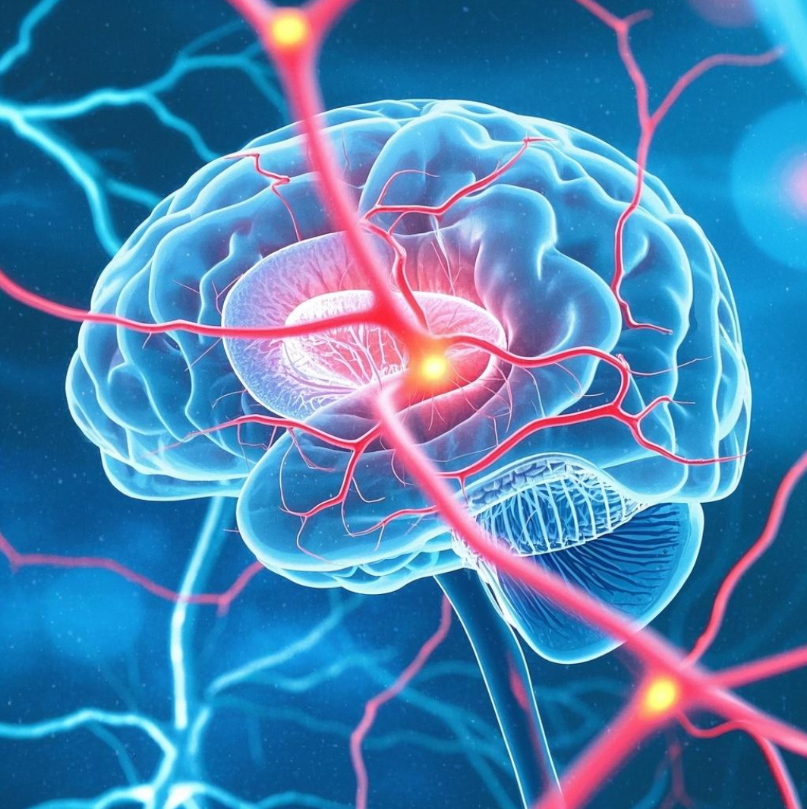

Push forward the AI research in PD diagnosis
 |
 |
< |
The automatic diagnosis of Parkinson's disease (PD) has received significant attention in recent years due to the high prevalence of PD and the need to improve the accuracy of diagnosis. Clinical diagnosis of Parkinson's disease (PD) often leverages diagnostic biomarkers in advanced magnetic resonance imaging (MRI). Quantitative alterations of tissue property in the deep gray matter (DGM) in MRI may indicate pathophysiological changes related to PD. However, automatic and accurate DGM segmentation faces many challenges, and core brain structures (i.e., SNpr and SNpe) for PD determination are particularly difficult to delineate. The lack of public datasets and quality annotations for PD research has been the bottleneck for developing deep learning models of clinical significance. The Ruijin Imaging Neuroscience Group has curated a multi-parametric MRI dataset for PD research with comprehensive annotations. In this challenge, we will provide a large dataset containing 500 subjects with 3 MR modalities (T1WI, QSM, NM-MRI) and bilateral DGM (CN, PUT, GP, STN, SN, RN, and DN) mask annotations. The challenge participants will compete in the DGM segmentation and PD diagnosis tasks. Publicly accessible foundation models and domain adaption techniques should be utilized to tackle the challenging PD diagnosis tasks while facing limitations in data scale and annotation. Specifically, two competition tracks are designed: (1) maximize the accuracy of the DGM segmentation using released data and public foundation models (2) maximize the accuracy of PD classification using released data and public foundation models.
key points, more details about the Ring PD dataset
Utilize the foundation modeling methodology, transfer learning, push forward the performance...
Rewards, publications, Oral presentation during MICCAI workshop
The automatic diagnosis of Parkinson’s disease (PD) has received significant attention in recent years due to the high prevalence of PD and the need to improve the accuracy of diagnosis. Clinical diagnosis of Parkinson’s disease (PD) often leverages diagnostic biomarkers in advanced magnetic resonance imaging (MRI). Quantitative alterations of tissue property in the deep gray matter (DGM) in MRI may indicate pathophysiological changes related to PD. However, automatic and accurate DGM segmentation faces many challenges, and core brain structures (i.e., SNpr and SNpe) for PD determination are particularly difficult to delineate. The lack of public datasets and quality annotations for PD research has been the bottleneck for developing deep learning models of clinical significance. The Ruijin Imaging Neuroscience Group has curated a multi-parametric MRI dataset for PD research with comprehensive annotations. In this challenge, we will provide a large dataset containing 500 subjects with 3 MR modalities (T1WI, QSM, NM-MRI) and bilateral DGM (CN, PUT, GP, STN, SN, RN, and DN) mask annotations. The challenge participants will compete in the DGM segmentation and PD diagnosis tasks. Publicly accessible foundation models and domain adaption techniques should be utilized to tackle the challenging PD diagnosis tasks while facing limitations in data scale and annotation. Specifically, two competition tracks are designed: (1) maximize the accuracy of the DGM segmentation using released data and public foundation models (2) maximize the accuracy of PD classification using released data and public foundation models.
Annotation for the deep brain nuclei structures: One neuroradiologist manually segmented the CN, GP, PUT, SN, RN, and DN in the bilateral hemisphere. Another radiologist with 5 years of experience in neuroimaging double-checked all the structural boundaries. Finally, those ROIs approved by these two radiologists will serve as the ground truth for the segmentation model.
Annotation for the SN, STN structures: The ROIs for the NM-rich region (SNpc, SN) were manually traced by a single rater on MTC magnitude images and QSM maps using SPIN software (SpinTech, Inc., Bingham Farms, MI). The NM-based SN boundaries were traced from the last caudal slice for three to five slices until the NM-rich region was no longer visible. Simultaneously, the iron-based SN boundaries were traced starting from one slice below the most cranial slice where the STN was visible and continued for four to six consecutive slices to the most caudal slice. The STN ROIs were traced from the top of the RN for two slices cranially. For all the ROIs, a dynamic programming approach (DPA) was used to determine the final boundaries to alleviate the subjective bias. All these boundaries were then reviewed by a second rater and modified accordingly in consensus with the first rater.
Sample image and annotation masks for DGM segmentation. The spatial variations of DGM structures are shown in different slices of the T1WI MRI and QSM MRI respectively. The enlarged 3D mask on the top right corner demonstrates the volume differences among DGM structures. Each DGM structure has the left and right regions, colored separately. Sample image and annotation masks for SNpc segmentation. The substantia nigra structure is partially seen in QSM MRI, partially seen in NM MRI, and the intersection area is the SNpc region.
The Ruijin-PD dataset includes 500 multi-parametric MRI cases (50% each for PD positives and healthy controls) with more than 105,000 images in total. Each case contains the T1WI, QSM, and NM-MRI images, with segmentation masks on 7 PD-related anatomical structures. The PD classification label is also included. The images for training (200 cases, with labels) and validation (100 cases, without labels) will be freely available at the competition start date, while the testing images (200 cases) will be available at the test stage (together with the labels for the validation set). The label for the test set will not be released. All the data and ground truth have not been previously published and have been kept confidential.
The data splitting is based on the cross-validation principle, for maximum randomness and reliability. The split proportion ensures adequate training samples and meaningful testing scores.
This challenge learns and extends from the previous competition we hosted at Neurips 2023 by pursuing a more detailed technical perspective of foundation model and transfer learning (i.e., model adaptation effectiveness with various data amounts) with a completely new and important clinical application setting (i.e., more clinic-focused tasks). It aims to investigate further how to utilize the power of foundation models to ease the effort of obtaining quality annotations and improve downstream clinical application accuracy. It aligns with the recent trend and success of building foundation models for various downstream applications. The proposed model adaptation paradigm differs from the standard few-shot learning from a methodology perspective. While it is true that the adaptation of foundation models could require a similar amount of data as conventional fine-tuning/few-shot methods, the fundamental technical routine is different. Our challenge focuses more on evaluating the effectiveness of these domain-adaptation approaches in the context of PD diagnosis. Quality data is often scarce in such specific domains, and developing high-quality models with limited sample cases is crucial for accurate diagnosis, which indeed is clinically more relevant and meaningful.
Parkinson’s disease (PD) is a progressive neurodegenerative disorder characterized by neuromelanin (NM) loss in the substantia nigra pars compacta (SNpc) and iron deposition increase in the substantia nigra (SN). Degeneration of the SN becomes obvious when it reaches a 50% to 70% loss of pigmented neurons in the ventral lateral tier of the SNpc. Iron deposition and volume changes of the other deep gray matter (DGM), including the red nucleus (RN), dentate nucleus (DN), and subthalamic nucleus (STN), are also associated with disease progression. Further, the STN serves as an important target for deep brain stimulation treatment in advanced PD patients. Therefore, an accurate in-vivo delineation of the SN and other DGM could be essential for a better PD study.
This study was approved by the institutional ethics committee in Ruijin Hospital, Shanghai Jiao Tong University School of Medicine (No.RJ2022-279). All participants provided written informed consent.
To evaluate the model performance for procedures involved in the PD diagnosis, we adopt segmentation metrics and classification metrics for corresponding models. The segmentation metrics include the Dice Coefficient and the Hausdorff Distance 95% percentile (HD95). For each segmentation region, the algorithms have separate Dice ranking and HD95 ranking. If the prediction of a region is missing, then it would rank at the bottom. The final ranking score is the average of all these rankings normalized by the number of teams. Therefore the final ranking status depends on the overall segmentation performance of all regions. It is noted that images with bad quality are excluded from the evaluation of segmentation performance. We will provide the codes and instructions for evaluation upon the data release.
For the PD classification task, we adopt the accuracy (Acc) and area under the receiver operating characteristic curve (AUROC). Accuracy reflects the overall correct predictions among all the test images. The predicted label is determined with the maximum softmax outputs in the multi-class classification task. AUROC is computed for the PD class to measure the capability of distinguishing between positive and negative classes at various threshold settings. The Acc and AUROC would have separate rankings, the final PD ranking will be determined by the average ranking of Acc and AUROC.
For each submission, missing results of testing cases are not allowed in general when the results for all testing cases will be automatically computed. If the submitted solution fails to generate the results for certain cases, a default output of ‘no finding’ (indicating an empty mask or non-PD) will be used to compute the evaluation metrics. For the cases without valid output, we set the ranks for the corresponding metrics to the maximum.
To assess whether the performance difference is significant, we will use paired and unpaired rank-based and t-test statistics for errors compared with permutation-generated one-sided null distributions.
Top performing methods in the DGM segmentation track as well as in the PD segmentation track will be announced publicly, both on the competition website and in the conjunct workshop. We will summarize the challenge results and submit a paper to IEEE TMI or Medical Image Analysis. All members of the participating team qualify as authors.
Using the dataset (200 cases in total of the training data), participants will develop model adaptation approaches using foundation models for the PD tasks. The participants should submit model predictions on the validation set several times before submitting the final results of testing predictions. At most 2 submissions of prediction results on the testing set are allowed.
Participants could submit their results of the validation set (100 cases of the validation data with labels held hidden before the final evaluation phase) to the server during the validation phase (3-5 submissions are allowed). Once the validation phase ends, the organizers will release the labels for the validation set
The evaluation samples and codes will be provided in PDCADxFoundation Github homepage once the validation phase starts. The submission format will be detailed as well, and it should be sent to organizers via e-mail.
Baidu Net-disk: will be provided on April 1.
Google Drive:: will be provided on April 1.
[Apr. 1, 2025] Website opens for registration
[Apr. 1, 2025] Release training images & ground truth
[May 1, 2025] Release validation images
[May 1, 2025] Submission system opens for validation
[June 15, 2025] Release validation ground truth
[June 15, 2025] Release testing images
[June 15, 2025] Submission system opens for testing
[Aug. 15, 2025] Testing submission deadline (codes, results, technical reports)
[Sep. 1, 2025] Release final results of challenge
[Sep. 10, 2025] Challenge paper submission deadline
[Sep. 27, 2025] Top-ranking teams report during the MICCAI annual meeting
Synapse: discussion link… Email: PDCADxFoundation@outlook.com